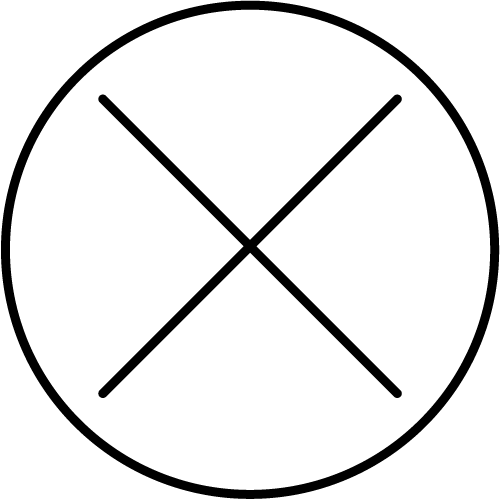

Deltid påverkar pensionen
Att jobba mer ger inte alltid så mycket högre pension – dra i reglaget för att se vad som händer vid olika deltidsprocent.
Deltidsprocent
Så räknade vi

Beräkningen utgår från att Sofia jobbar samma deltid hela livet, och är anställd i kommun eller landsting. Medellönen för undersköterskor i kommuner och landsting var 24 720 kr/mån år 2016.
I pensionen ingår premiepension, inkomstpension, garantipension och tjänstepension.
På www.minpension.se kan du göra en personlig pensionsprognos.
| Förutsättningar | |
|---|---|
| Ålder | 20 |
| Avtal | AKAP-KL |
| Arbetat sedan | 20 |
| Uttagstid allmän pension | Livsvarigt |
| Uttagstid tjänstepension | Livsvarigt |
| Avkastning premiepension | 2,10% |
| Avkastning tjänstepension | 2,10% |
| Löneutveckling | 0,00% |
| Prisnivå | 2018 års |
| Pensionsålder | 67 |
Källa: Min Pension